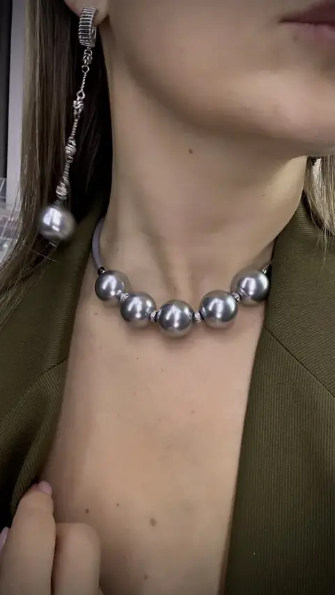
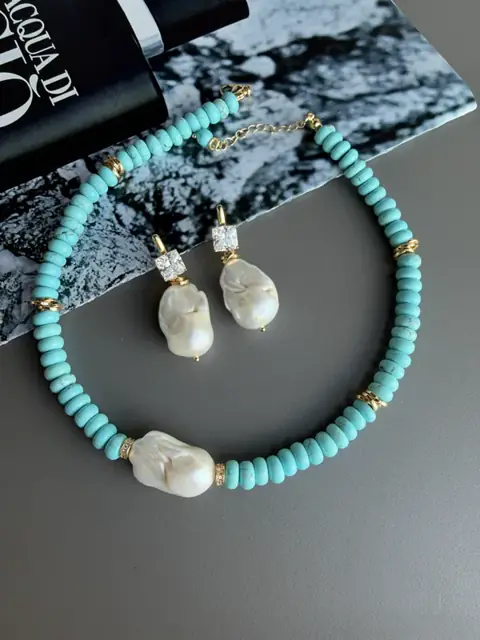
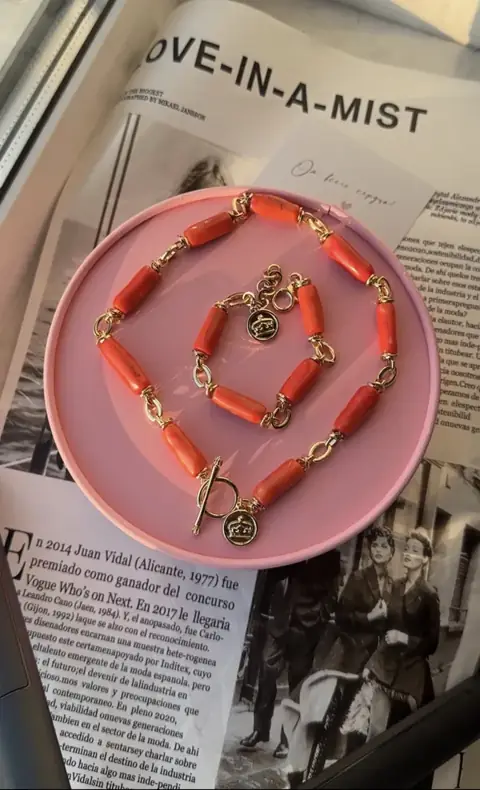
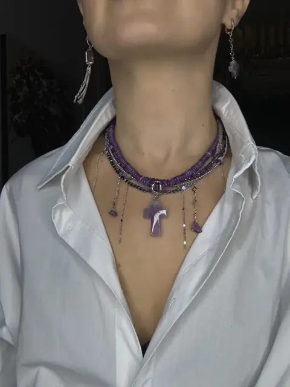
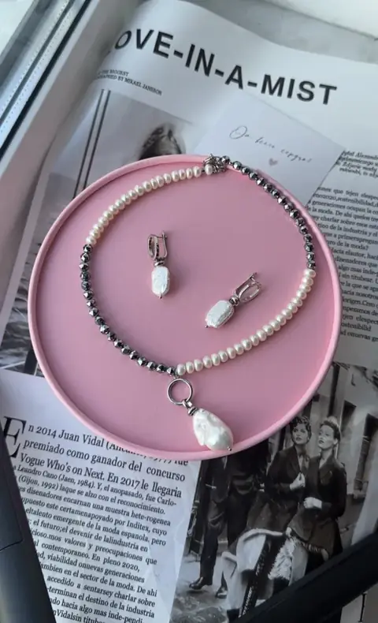
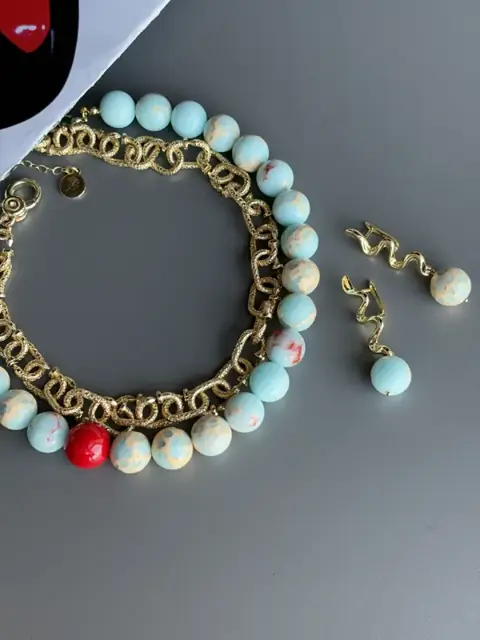
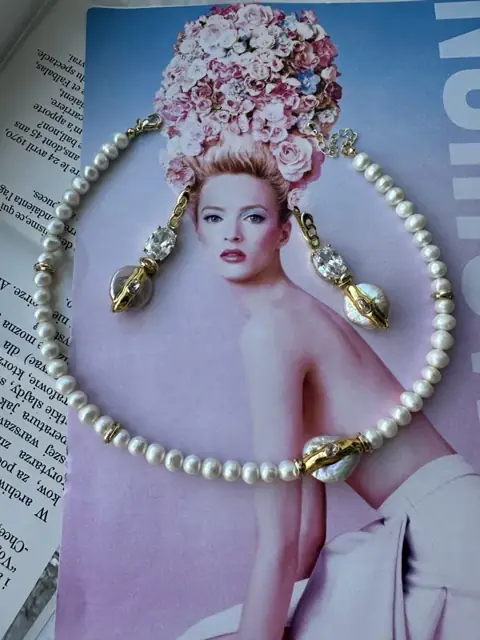

Комплекты: колье и серьги
Готовые комплекты украшений ручной работы — колье, серьги и браслеты в одном настроении. В разделе: 7.

Комплект: колье и серьги «Майорка»2 600 ₽ · В наличии
Колье и серьги из бирюзы и барочного жемчуга5 500 ₽ · В наличии
Комбинированный сет из коралла (колье, браслет серьги)6 700 ₽ · В наличии
Многослойное колье и серьги из аметиста и гематита6 900 ₽ · В наличии
Сет «Инь-ян»: колье и серьги из терагерца и натурального жемчуга9 600 ₽ · В наличии
Комплект «Лазурь»: колье, цепь и серьгиЦена по запросу · В наличии
Комплект: чокер и серьги из жемчугаЦена по запросу · В наличии